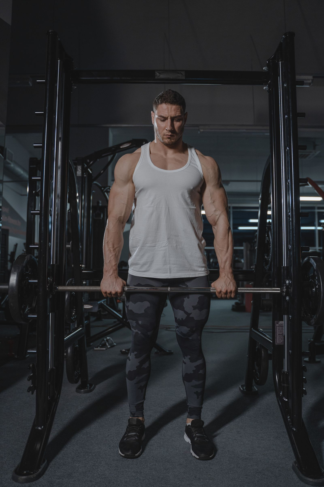

Protein hỗ trợ thích nghi khi kết hợp tập sức mạnh. Tổng quan ở người khỏe mạnh ghi nhận lợi ích trung bình tăng thêm giảm dần quanh mức tổng khoảng 1,6 g/kg/ngày. Đây là ước tính từ nghiên cứu, không phải ngưỡng tối thiểu hay mức tối đa bắt buộc cho từng người.
Tình huống minh họa: Trước khi thêm bột, tính cả protein từ bữa ăn. Nếu đã ăn đủ nhưng tập thiếu nhất quán hoặc ngủ kém, tăng tiếp lượng đạm có thể không giải quyết đúng nút thắt.
Tổng lượng protein, kích thích tập và lợi ích tăng thêm
Tập kháng lực tạo kích thích thích nghi; protein cung cấp các amino acid cho quá trình chuyển hóa và xây dựng mô. Nhưng tăng một thành phần không bù được mọi thiếu hụt của chương trình. Nếu thiếu năng lượng, không có tiến triển tập hoặc hồi phục kém, chỉ thêm bột protein chưa chắc giải quyết đúng vấn đề.

Tổng quan Morton và cộng sự tổng hợp 49 thử nghiệm ở người khỏe mạnh, ghi nhận lợi ích của bổ sung trong bối cảnh tập kháng lực và lợi ích tăng thêm giảm dần quanh tổng lượng khoảng 1,6 g/kg/ngày. Đây là ước tính nhóm, không phải công tắc mà vượt qua một gram là vô ích hoặc thấp hơn một gram thì mất cơ. Cũng không nên gọi mức khuyến nghị dinh dưỡng chung là “chỉ để chống chết đói”.
Amino acid như leucine tham gia tín hiệu, nhưng không có một liều kích hoạt duy nhất bảo đảm kết quả ở mọi độ tuổi và bữa ăn. Đối với người dùng, nên tính tổng từ cả thực phẩm, phân bố phù hợp và khả năng duy trì trước khi lo một cửa sổ vài chục phút. Bằng chứng trên người khỏe mạnh không chứng nhận chế độ giàu protein cho người có bệnh thận hoặc chỉ định dinh dưỡng riêng. 1 2 3
Năng lượng sẵn có: công thức là điểm khởi đầu, không phải chẩn đoán
Năng lượng sẵn có xem xét phần năng lượng còn lại cho hoạt động cơ thể sau chi phí vận động, thường được mô tả theo khối lượng cơ thể không mỡ. Khái niệm này giúp hiểu vì sao một người vẫn ăn đều nhưng chưa đáp ứng được tải tập hoặc nhu cầu sinh học. Cân nặng đơn lẻ cũng không kể hết câu chuyện.
Khó khăn là các thành phần của phép tính đều có sai số: thực phẩm ăn vào, năng lượng vận động và khối lượng không mỡ không được biết chính xác chỉ bằng một ứng dụng. Đồng thuận IOC năm 2023 lưu ý sự khác nhau giữa người và giữa các hệ cơ thể; không nên dùng một ngưỡng duy nhất như ranh giới chẩn đoán REDs.
Ảnh hưởng có thể liên quan sức khỏe xương, sinh sản, chuyển hóa và hiệu suất, nhưng triệu chứng không đặc hiệu. Mất kinh cần được xem xét cùng khả năng mang thai và những nguyên nhân khác, không tự xác nhận REDs. Khi có dấu hiệu đáng lo, mục tiêu là phối hợp đánh giá, dinh dưỡng và thay đổi tải tập. Đạt được một con số calo do đồng hồ đề nghị không bảo đảm mọi chức năng đã hồi phục.
Công thức và điều nó chưa biết về bạn
Khung thường dùng là EA = (năng lượng ăn vào − năng lượng dùng cho vận động) / khối lượng không mỡ, với đơn vị năng lượng theo kg khối lượng không mỡ mỗi ngày. Công thức làm rõ câu hỏi phần năng lượng còn lại phải hỗ trợ các chức năng nào. Nó không biến sai số của ba thành phần thành một kết quả chính xác.
Đặc biệt, mức tiêu hao do đồng hồ ước tính không đồng nhất với toàn bộ thông tin cần trong nghiên cứu năng lượng sẵn có. Ghi ăn và đo thành phần cơ thể cũng có giới hạn. Vì vậy, không nên giải một phép tính từ app rồi dùng một đường ngưỡng để kết luận bị hoặc hết REDs. Diễn biến sức khỏe và đánh giá nhiều mặt vẫn cần thiết. 3 4
Thiếu hụt, đủ nhu cầu và dùng quá mức là ba tình huống khác nhau
Một vi chất tham gia cơ chế sinh học không có nghĩa uống thêm sẽ đẩy cơ chế đó vượt mức bình thường. Kẽm có vai trò trong nhiều enzyme và protein, còn vitamin D liên quan hấp thu canxi, xương và những chức năng khác. Bằng chứng ở người thiếu không tự áp dụng cho người đã đủ.
Đây là khác biệt giữa sửa thiếu hụt và tăng cường hormone. Một nghiên cứu nhỏ ghi nhận testosterone thay đổi khi tình trạng kẽm được điều chỉnh không chứng minh mọi nam giới cần bổ sung, hoặc có thể dự báo mức tăng từ mỗi viên. Các liên hệ giữa vitamin D và hormone cũng không làm vitamin D trở thành liệu pháp testosterone thay thế.
Cần tính cả lượng từ nhiều sản phẩm. Một viên đa vitamin, một sản phẩm tăng T và viên kẽm riêng có thể chồng thành phần mà người dùng không nhận ra. Dùng dư có thể gây hại; kẽm liều cao kéo dài có thể ảnh hưởng đồng, và vitamin D quá mức cũng có độc tính. Thông tin liều cần gắn với độ tuổi, tình trạng, tương tác và chỉ định cụ thể, thay vì một bảng “dạng hấp thu tối ưu cho mọi người”. 5 6 7
Bảng đối chiếu để đọc đúng thông tin
| Câu hỏi | Kiểm tra trước | Tránh suy diễn |
|---|---|---|
| Có cần thêm protein? | Tổng lượng từ cả thực phẩm | Tập tạ là bắt buộc cần bột |
| Có cần ăn ngay lập tức? | Tổng lượng, bữa gần buổi tập và khả năng duy trì | Một cửa sổ ngắn quyết định mọi kết quả |
| Tăng lượng có tăng cơ mãi? | Lợi ích tăng thêm và toàn bộ chương trình | Càng nhiều càng tốt |
| Có bệnh thận hoặc chỉ định riêng? | Kế hoạch với đội ngũ điều trị | Dữ liệu người khỏe chứng minh an toàn cho mọi bệnh |
Điểm cần giữ khi đọc kết quả nghiên cứu
Nghiên cứu không chứng minh ăn càng nhiều càng tăng cơ, cũng không cho phép kết luận an toàn ở mọi bệnh thận. Nhu cầu thay đổi theo mục tiêu và bối cảnh. 1 2 3
Ứng dụng thực tế: làm gì và đánh giá bằng cách nào?
Ví dụ, 70 kg nhân 1,6 tương đương khoảng 112 g protein mỗi ngày. Có thể chia giữa các bữa từ cá, trứng, sữa, đậu hoặc thực phẩm phù hợp. Kiểm tra tổng khẩu phần trước khi mua bột protein.
- Nhìn toàn bộ khẩu phần. Tính cả thực phẩm, đồ uống và viên bổ sung, thay vì chỉ một chất nổi bật trong quảng cáo.
- Gắn với hoàn cảnh thật. Khối lượng tập, khả năng nấu ăn, điều kiện kinh tế và bệnh nền quyết định tính khả thi.
- Đổi một việc có thể duy trì. Ví dụ, chuẩn bị bữa phù hợp hơn hoặc xem lại thành phần chồng lặp; không coi mức hạn chế nghiêm ngặt là thành tích sức khỏe.
- Đánh giá đúng kết quả. Cảm giác và khả năng sinh hoạt khác với kết quả xét nghiệm hay sinh sản; khi cần hãy trao đổi mục tiêu theo dõi phù hợp.
Khi nào nên tìm hỗ trợ?
Nghiên cứu không chứng minh ăn càng nhiều càng tăng cơ, cũng không cho phép kết luận an toàn ở mọi bệnh thận. Nhu cầu thay đổi theo mục tiêu và bối cảnh.
Nếu có bệnh thận, bệnh lý ảnh hưởng dinh dưỡng hoặc chỉ định hạn chế đạm, cần mục tiêu riêng từ đội ngũ điều trị.
Nguồn tham khảo và phạm vi hỗ trợ
-
Morton et al. (2018) — A systematic review, meta-analysis and meta-regression of the effect of protein supplementation on resistance training-induced gains in muscle mass and strength in healthy adults — Systematic review and meta-analysis. Hỗ trợ: Protein và tập kháng lực ở người khỏe mạnh; không áp dụng trực tiếp cho bệnh thận.
-
WHO — Healthy diet — Public health guidance. Hỗ trợ: Chế độ ăn đa dạng và chất lượng thực phẩm.
-
Mountjoy et al. (2023) — IOC consensus statement on Relative Energy Deficiency in Sport (REDs) — Consensus statement. Hỗ trợ: Thiếu năng lượng, xương, kinh nguyệt và đánh giá đa chuyên ngành.
-
NHS — Missed or late periods — Public health guidance. Hỗ trợ: Nguyên nhân trễ kinh và thời điểm đi khám.
-
NIH ODS — Zinc: Health Professional Fact Sheet — Evidence fact sheet. Hỗ trợ: Nhu cầu kẽm, thiếu hụt và tác hại khi dư.
-
NIH ODS — Vitamin D: Fact Sheet for Consumers — Evidence fact sheet. Hỗ trợ: Vai trò vitamin D và nguy cơ dùng quá mức.
-
Endocrine Society — Hypogonadism in Men — Professional patient guidance. Hỗ trợ: Chẩn đoán thiếu testosterone và giới hạn xét nghiệm.
Cập nhật nội dung và nguồn: 26/10/2026. Nội dung giáo dục; chưa có xác nhận duyệt bởi bác sĩ.